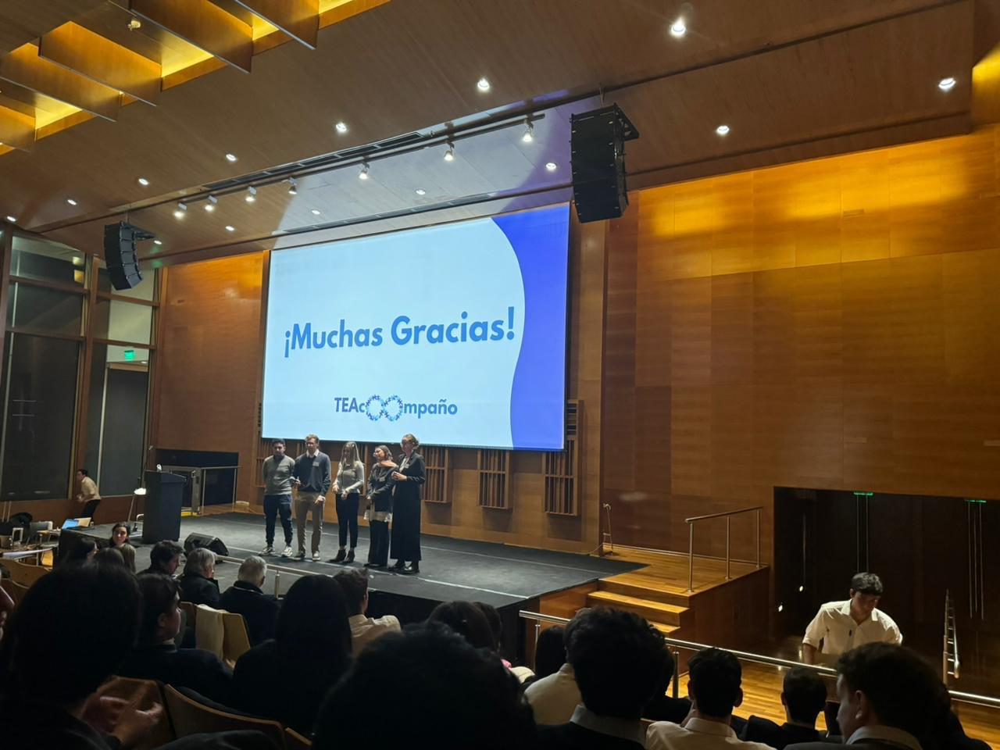
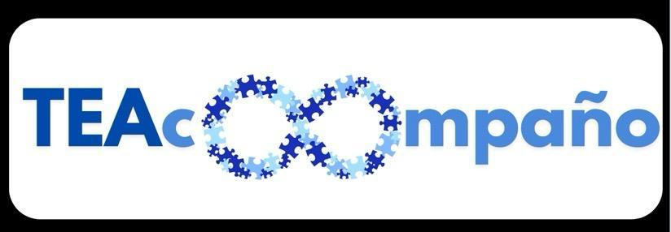
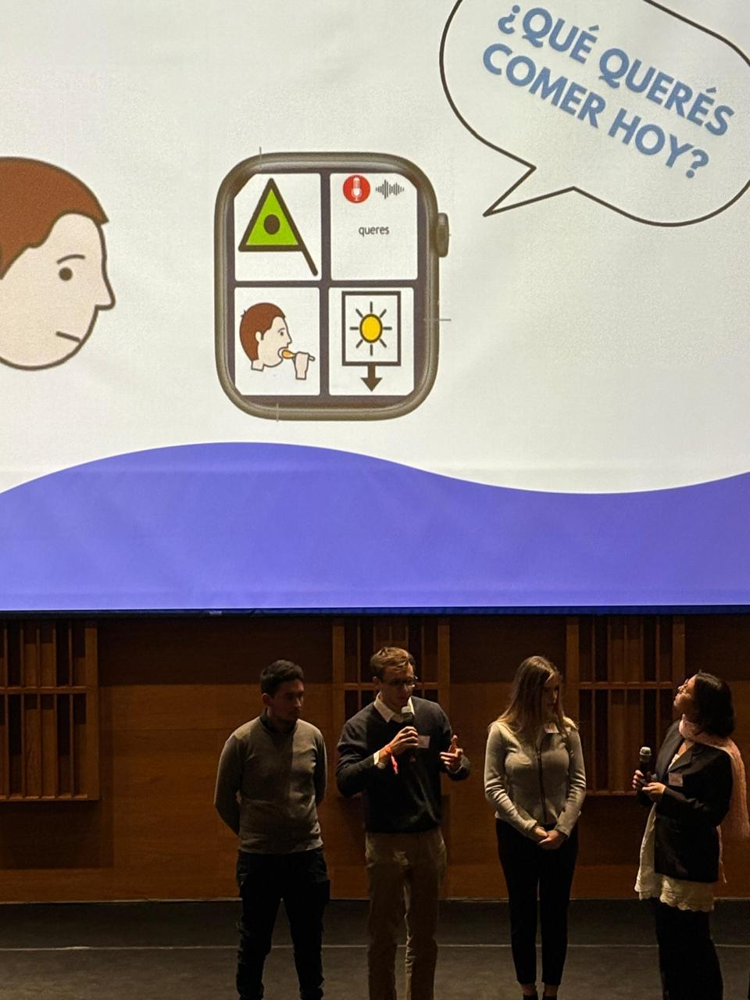
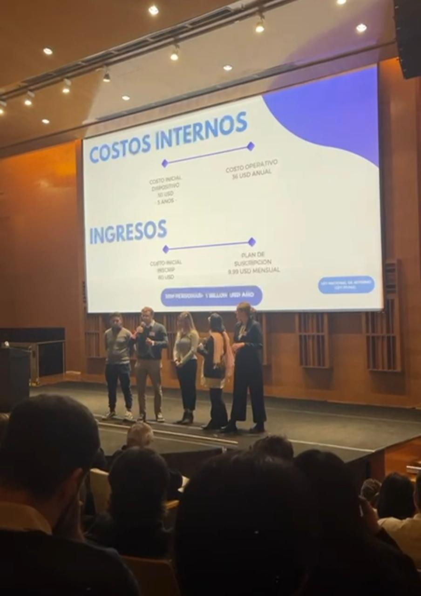
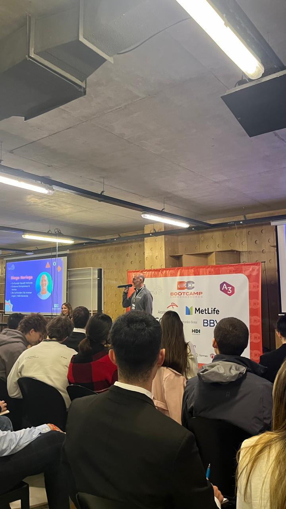
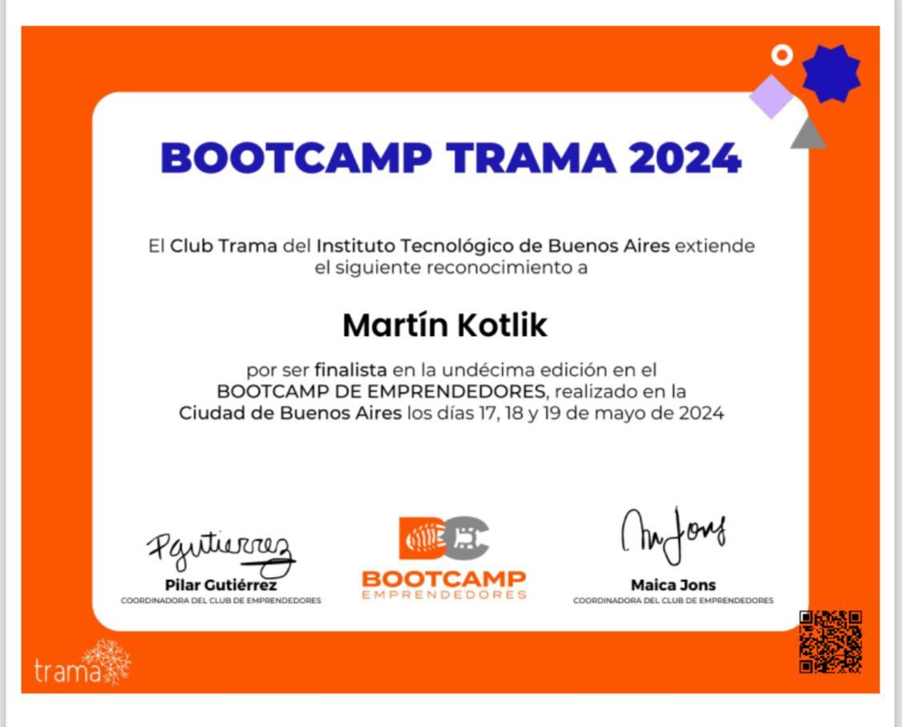

TEAcompaño - From Social Challenge to Finalist Venture Concept
Selected among the top two projects in the Social & Environmental Impact category at ITBA’s Bootcamp Trama 2024. Our team developed TEAcompaño, a smartwatch-based assistive communication concept for autistic children, and presented it to investors on stage.

From a real need to an investor pitch
During Bootcamp Trama, organized by the Instituto Tecnológico de Buenos Aires (ITBA) and Trama, I joined approximately 150 young participants from Argentina and abroad for an intensive entrepreneurship experience. We worked through the full journey of turning a real-world problem into a feasible solution and a viable business model.
The challenge: make communication more accessible
Our team identified a social-impact opportunity: helping autistic children communicate everyday needs more easily. TEAcompaño was conceived as software using pictograms on a smartwatch, with an intuitive wearable interface designed to support simpler, more autonomous interactions.
From concept to business case
Beyond the product idea, we worked on defining the target need, refining the value proposition, evaluating practical feasibility and translating the concept into a business model. Our final presentation addressed the proposed product, its cost structure and potential revenue model. The solution remained a concept developed during the bootcamp, not a commercially deployed product.
Top-two finalist - Social & Environmental Impact
Our team ranked among the two best projects in the Social & Environmental Impact category. That recognition gave us the opportunity to pitch TEAcompaño on a theatre stage in front of investors - a valuable experience in presenting an engineering-inspired solution, defending its potential and communicating its social purpose.
What I gained
The experience strengthened my ability to identify meaningful problems, work with a multidisciplinary team, connect technical concepts with business viability and communicate ideas convincingly to a professional audience. It reinforced a way of working that I bring to engineering projects: start with the problem, validate the solution and make the result understandable to others.




